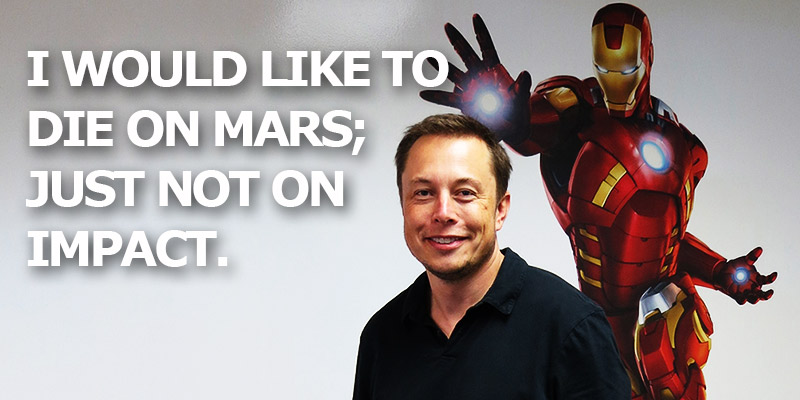

刚准备出阅览室的时候，我莫名其妙地回了一下头，仿佛有什么东西在一直等着我回头一样。原来是Elon Musk的传记。我之前在极客公园上看了几篇连载，本来还想看看书的，结果忘了。恰巧图书馆有，省的我买了。

大概花了两个星期看完了。每天去图书馆，我都忍不住从书包里掏出来看看。有一次，应该是上午，看论文都快看睡着了，掏出Elon的故事看几眼，瞬间睡意全无，鸡血满满。Elon的故事（奋斗史）应该可以让很多人羞愧，我总结了以下对我触动比较大，或者是比较有意思的点。
Elon拥有极强的专注力
Elon在小学三四年级的时候就读遍了学校以及附件图书馆的书。我估计这阅读量比我打太多了，我以前挺不喜欢读书的，除了名人传记，现在好多了，看到自己这么差，不努力只会越来越差。话说回来，Elon估计是由于读书太多，大脑想象力丰富。所以他才会经常陷入沉思，旁边的人叫他，他也没反应。医生还觉得他听力有问题，切除了他的扁桃体，据说这样能提高听力。
Elon的爸爸送给他的第一台电脑里面有个basic汇编教学手册，Elon三天没睡觉把它看了。一般人要花6个月。从这个事情上就能看出来，他是个真学霸，学习效率惊人。
Elon的身上有很多优秀的素质，其实这点是我最钦佩的。我也曾渴望能达到这种状态，但是真的很难。身边能打扰自己的因素实在是太多了，连Elon也承认，自己现在几乎是找不回来童年时的这种感觉了。
怎么才能有这种极强的专注力？热爱你所做的吧我觉得。比如，当我在看电影或者写代码的时候，我的注意力就不容易分散。这种感觉很爽，但是达到身边的人叫你也没反应的状态，实在是难以企及。
Elon超级喜欢美女
我能说我也喜欢吗😂谁不喜欢啊😂
当初，Elon随母亲加入了加拿大国籍，然后只身一人来到这片土地。到选大学的时候就搞笑了，Elon选择皇后大学，而没有选择滑铁卢大学，是因为他觉得皇后大学的美女多！！！按照这个逻辑，我真是选错学校了😭选错了2次。。。自古英雄爱美女，我能理解。Elon的确在皇后大学追到了以后的老婆贾斯汀，如果我没记错的话。可惜，还是离婚了。贾斯汀希望别人眼中的自己是个作家，而不是一个富翁的老婆。女人的虚荣心一定要满足呀，Elon这个工作狂怎么就不理解。好好一对夫妻，已经生了5个孩子，甚至经历了孩子夭折的折磨，最终还是曲终人离散。在马斯克最困难的时候，宁愿把最后一分钱投给公司而去和老婆住丈母娘家的地下室。最后是连地下室都没住成就散伙了。后来找了个英国演员莱斯，也是分分合合，合久必分，分不就久就又和了，然后又分了。。。
Elon是个工作狂
“他就像条狗一样”，曾经有人这么形容Elon，我记不清是谁了。Elon的工作强度令我发指，他甚至将来愿意吞服可以管饱的药丸，也不愿意浪费时间去吃饭。他可以一周7*24小时工作。我相信在Elon的脑海深处，他始终坚定地相信没有什么是做不成的。当自己的手下说任务无法完成的时候，我很能理解他为什么发飙，把他们轰出办公室。Elon跟我们不是一类人，他是上帝派到人间提醒我们这些懒人努力干活的救世主。
一旦Elon定下目标，他是绝对能够为之拼命的人。最难得一点是，他能在功成名就之后，还毫无保留地为儿时的梦想奋斗。Elon大概每天只睡5个多小时，也会一个星期几乎不睡觉。工作就是生活，和Tim Cook一样。热爱自己的工作，就像热爱自己的生活。这种境界是那些只贪图享受的垃圾永远体会不到的。如果我哪天也能达到这种状态，那真是没白活了。
Elon不近人情？
在事业上，Elon对自己的员工不近人情我是非常能理解的。他承担的压力我们这些凡人是无法想象的。吴军以前也在书里面说过，Elon这样很有可能把自己财富耗尽。的确，他做的事情风险太大了。当几乎把自己的钱全部投给自己热爱的公司的时候，对员工发火是挺正常的。他肯定希望自己的员工像自己一样优秀，永远坚信没有完成不了的目标，永远能够漂亮地完成任务。
Elon的刻薄和无情，或许是童年时期的悲惨经历留下的后遗症。Elon小时候经常被同学打，还有，父亲在家里会对兄弟俩进行长达3个小时的精神摧残。关于这段经历，Elon没有透露更多。大概是不愿意提及这么黑暗的经历。童年的摧残，加上因专注的天赋而导致和同龄人的疏远，长大后的Elon有着社交障碍（但为什么追美女这么厉害。。。）。他像利用工具一样利用员工的工作态度，就不难理解了。甚至，我觉得Elon是需要同情的，就像我们应该同情没有童年的迈克尔杰克逊。地球上很少有人能有，并且能抗住Elon身上的压力吧。他虽然有着上百亿的身价，但这些钱都是绝大风险的衍生物，也有可能瞬间缩水，只要SpaceX的载人飞船出事。但愿这样的事情不要发生。
不过Elon把助手布朗辞掉这件事情，我是不太能理解。也可能是我太喜欢钢铁侠了，幻想Elon也有Stark和Pepper这样的罗曼史。我这种软心肠的人，是干不来这种事情的，不过我也没有这么黑暗的童年。